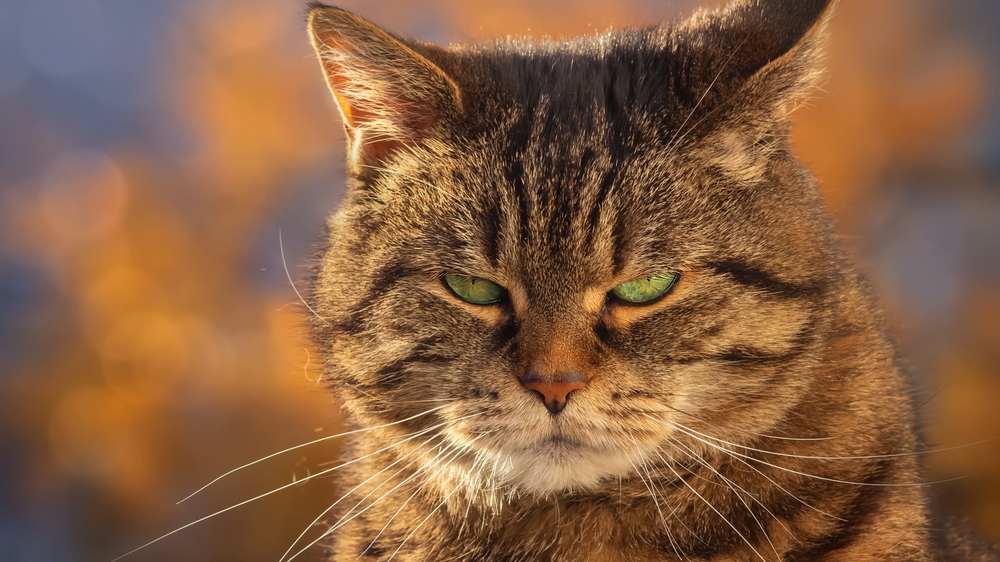

Теперь код будет стуктурированнее и красивее.
Обо мне
Теперь код будет стуктурированнее и красивее.
О цели
потому что мне это нравится, и в будущем свой интерес я могу монетизировать.

О развитии
Затем мои кураторы посоветовали мне начать дополнительное обучение в "Коде будушего". И вот я здесь.